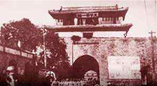

哲学专题
学前儿童模式认知的发展与教育活动设计
曾经有学者提出，数学是“关于模式的科学”，因为模式不仅反映了数学的基本主题，而且反映了数学的实质，即数学是关于客观世界形式、结构和关系抽象化模式的研究。所谓模式，是指在物理、数学等现象... [详细]
军事学专题
解放军今日在东海实弹演习 辽宁舰或夜间训练
曾经有学者提出，数学是“关于模式的科学”，因为模式不仅反映了数学的基本主题，而且反映了数学的实质，即数学是关于客观世界形式、结构和关系抽象化模式的研究。所谓模式，是指在物理、数学等现象... [详细]
教育学专题
学前儿童模式认知的发展与教育活动设计
曾经有学者提出，数学是“关于模式的科学”，因为模式不仅反映了数学的基本主题，而且反映了数学的实质，即数学是关于客观世界形式、结构和关系抽象化模式的研究。所谓模式，是指在物理、数学等现象... [详细]
文学专题
历史学专题

清代长江救生红船的公益性与官办体系的衰败
曾经有学者提出，数学是“关于模式的科学”，因为模式不仅反映了数学的基本主题，而且反映了数学的实质，即数学是关于客观世界形式、结构和关系抽象化模式的研究。所谓模式，是指在物理、数学等现象... [详细]